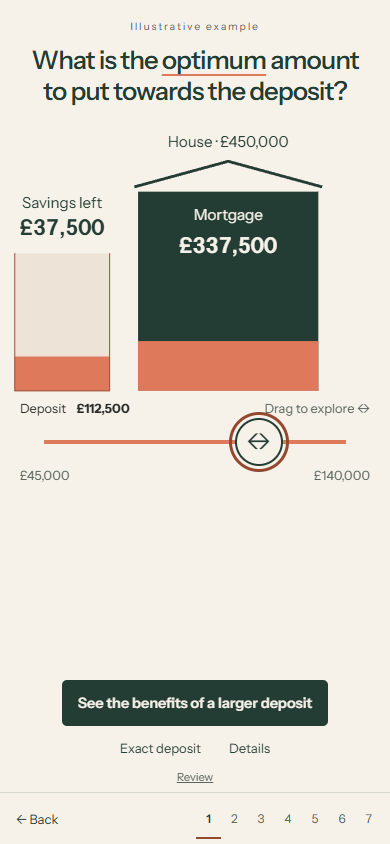
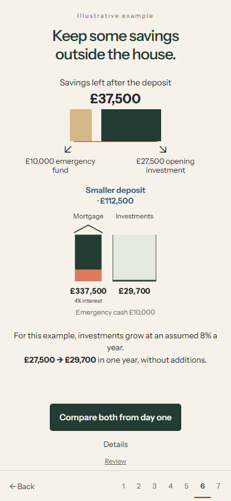
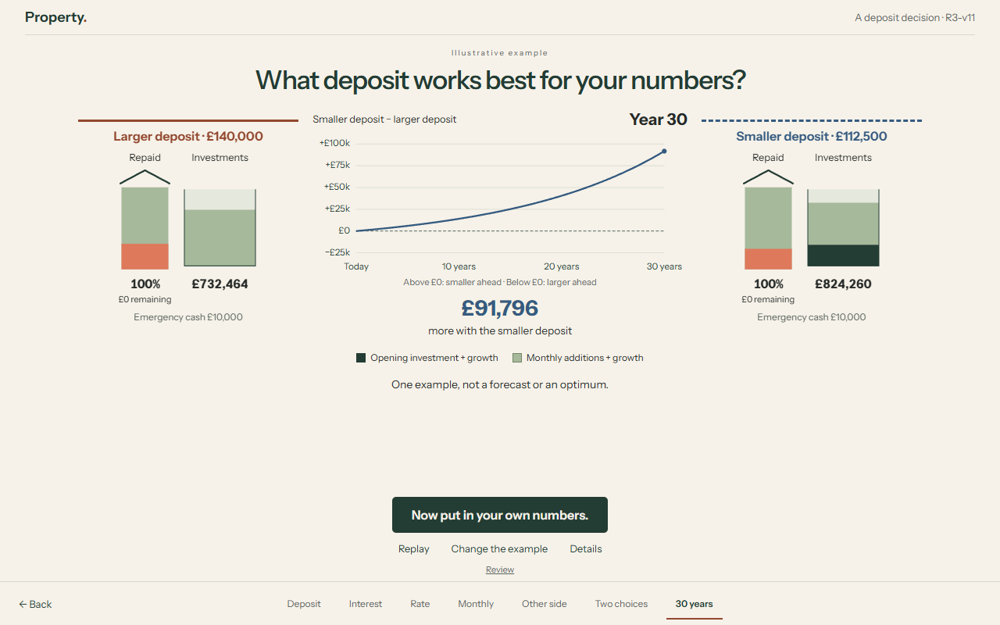
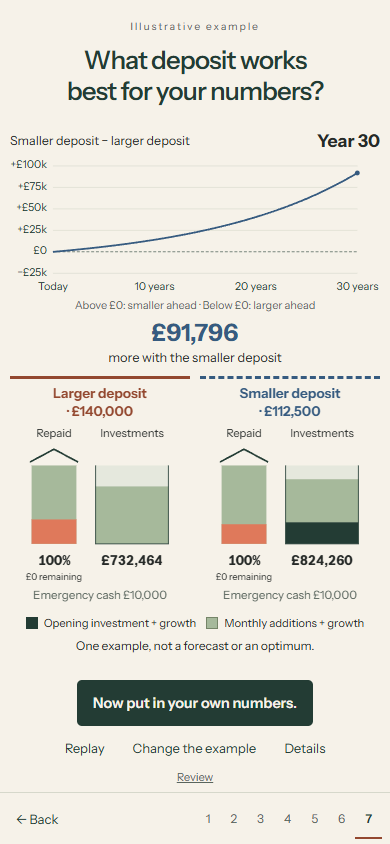

A deposit decision,
made clearer.
A larger phone interaction, a real £2,000 monthly constraint, a visible savings-to-investment bridge, and one readable difference graph.
Awaiting owner visual feedback. No R4, no main merge. R3-v10 is preserved.
The calculated example
with a £112,500 deposit instead of £140,000 after 30 years, under these assumptions. Exact difference: £91,795.58.
Both households start with a £450,000 house, £150,000 savings after costs, £10,000 cash reserve and exactly £2,000 a month after everyday expenses. Both comparison mortgages are at the fictional 4% rate.
| At purchase | Smaller deposit | Larger deposit |
|---|---|---|
| Deposit | £112,500 | £140,000 |
| Opening investment | £27,500 | £0 |
| Monthly mortgage | £1,611.28 | £1,479.99 |
| Monthly investment | £388.72 | £520.01 |
| Year-30 net position | £1,284,259.61 | £1,192,464.03 |
Unrounded values drive calculations. Investments assume constant 8% annual-effective growth; cash earns 0%; house value is constant. No tax, inflation, fees, refinancing or overpayments. This example establishes neither an optimum nor a forecast. Exact financial record.
The minimum affordable whole-pound deposit is £77,437. Fictional maximum-inclusive LTV bands are 90% at 6%, 85% at 5%, and 75% at 4%. Three candidates were examined at unchanged 8%: £90,000 loses £134,335.50; £112,500 gains £91,795.58; £120,000 gains £66,760.42. The first 4% threshold was selected because paying more buys no further rate reduction. Candidate evidence.
What to look for
- On a 390px phone layout, the house is about 180px wide and the input has 302px travel with a 48px thumb. R3-v10 measured about 105px and 30px respectively. Try a slow drag, reversal and movement outside the handle.
- The monthly strip appears early, then divides into mortgage payments and the genuine amount available to invest. Educational unaffordable selections are labelled and cannot become funded timelines.
- The opposing benefit replaces the earlier benefit labels. Retained savings split into reserve and opening investment; the brief growth demonstration uses its own explicit user action.
- The graph shows smaller minus larger net position. Both start at zero difference. Its fixed scale includes a labelled zero; both houses and investment cohorts use the same five-second timeline.
Uncut, normal-speed journeys
Actual recorded browser operation, including full-range dragging and reversals, the savings bridge, full playback and prototype handoff. Desktop uses mouse input; phone uses Chromium touch emulation. No physical phone was tested.
Desktop · 1280 × 800
Phone emulation · 390 × 844
Useful frames








Verification and limits
Local: nine independent financial tests, three JavaScript tests, 13 complete worker/CPython cases, 72 scene/viewport cases, 24 enlarged-text cases, and normal/reduced-motion interaction lifecycles. Independent review resolved four material issues and found no outstanding Critical/Important implementation findings.
Backend: all 4,730 cases passed across the initial run and targeted rerun (4,561 + 169). The first run's 169 setup errors came from a missing local temporary parent; that setup was corrected without changing tests. Ruff and strict mypy on 53 files passed. This is not represented as a single clean full-suite run.
Physical-device, Safari/Firefox, spoken screen-reader and novice-comprehension testing remain unperformed. The personal calculator is unavailable; the explicit handoff preserves the completed result and collects no inputs. Hosted deployment and source CI status are recorded separately in the identity receipt.
Recorded application source: 0ea7381c159212bd29fbe992bd3181d73702782b. Source and verification. Draft PR.
Visual feedback
Is the deposit control comfortable on a phone? Is the £2,000 amount clear? Can you follow the savings into investments? Is the difference graph immediately understandable? Does the sequence feel concise and user-paced? Does the ending explain the example without claiming an optimum?